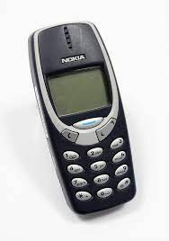

A história da Nokia como um marco na evolução da comunicação móvel.
A Nokia foi fundada em 1865 como uma empresa de papel na cidade de Tampere, na Finlândia. Ao longo dos anos, a Nokia expandiu seus negócios para incluir produtos como pneus, cabos e eletrônicos. No entanto, foi somente na década de 1980 que a empresa se tornou conhecida por seus telefones celulares.
Primeiro celular
O primeiro celular da Nokia foi o Mobira Senator, lançado em 1982. Na época, o Mobira Senator era considerado um dispositivo de alta tecnologia, pois era capaz de fazer chamadas telefônicas em qualquer lugar, algo que era impossível com os telefones fixos da época.
O Mobira Senator tinha um tamanho grande e era pesado, pesando cerca de 9,8 kg, o que o tornava pouco prático para uso diário. No entanto, o lançamento do Mobira Senator foi um marco importante na história da Nokia, pois lançou a empresa no mercado de telefones móveis, que mais tarde se tornaria uma das áreas mais importantes de negócios da empresa.
A ascensãoda Nokia como líder do mercado de telefonia móvel
Nos anos 2000, a Nokia se tornou a maior fabricante de celulares do mundo, com uma participação de mercado de mais de 40%. A empresa continuou a inovar, lançando modelos populares como o Nokia 3310, que se tornou um ícone da cultura pop.
A parceria mal sucedida da Nokia com a Microsoft: o que deu errado?
No entanto, a Nokia enfrentou desafios na década de 2010, à medida que a Apple e a Samsungse tornaram líderes no mercado de smartphones. Em 2011, a Nokia anunciou uma parceria com a Microsoft para produzir telefones com o sistema operacional Windows Phone. No entanto, a parceria não foi bem-sucedida e, em 2014, a Nokia vendeu sua divisão de dispositivos e serviços para a Microsoft.
A reinvenção da Nokia: foco na tecnologia de rede 5G e além
Desde então, a Nokia se concentrou em outros negócios, como a tecnologia de rede 5G e a fabricação de equipamentos de telecomunicações. No entanto, a marca Nokia continua sendo conhecida em todo o mundo e sua história como uma das pioneiras da tecnologia móvel permanece como um marco importante na história da indústria de telecomunicações.
Então é isso! Espero que você tenha gostado do nosso artigo sobre a Nokia.